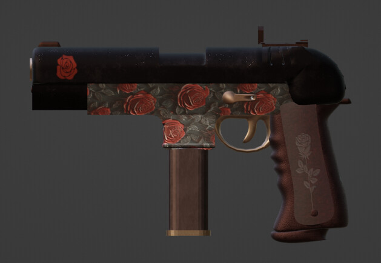
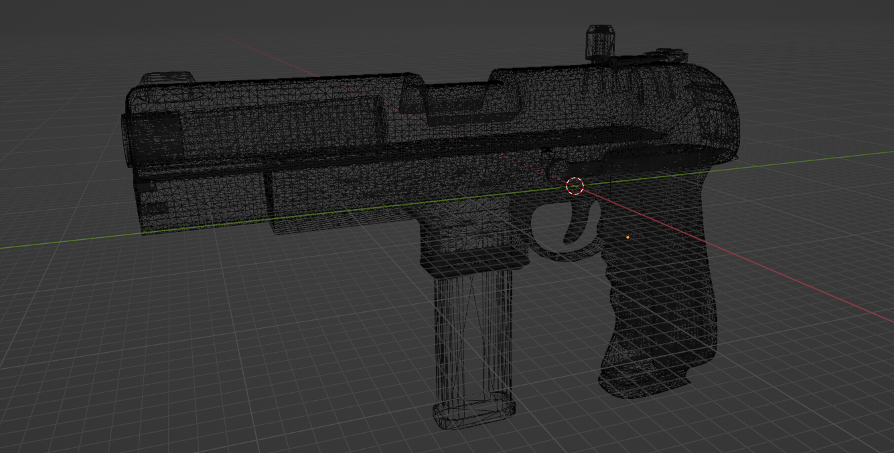
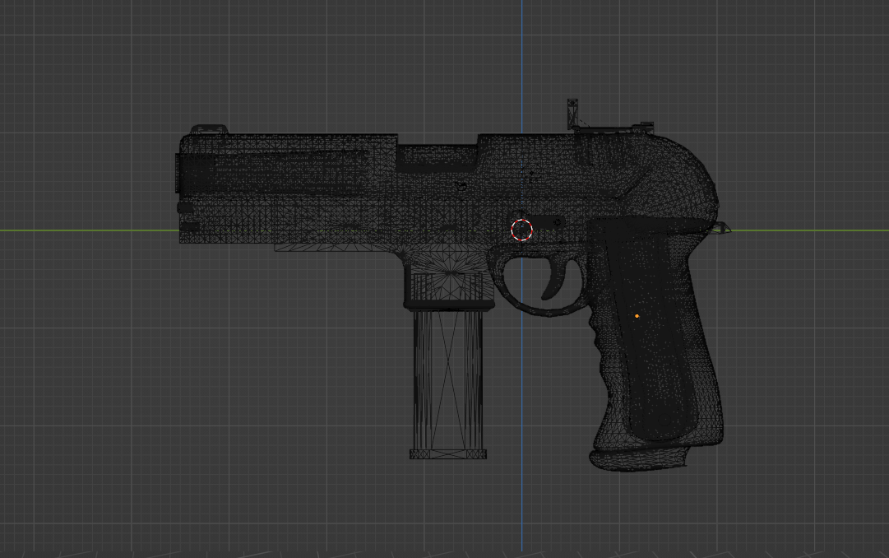

The topology was carefully crafted, avoiding any unnecessary polygon excess. The mesh was fully optimized to ensure smooth performance even when loaded in-browser — as showcased at the bottom of this page.
Every vertex placement was intentional, maintaining the model's visual richness while keeping its structure clean and lightweight. This balance between form and function reflects the project's core idea: high-quality 3D art that remains accessible and efficient across platforms.


Despite its visual richness, the Red Rose model delivers solid real-time performance. The modeling process was carefully balanced between aesthetic fidelity and technical efficiency. The result is a stylized weapon with a strong visual presence that still runs smoothly, even in browsers via WebGL — proving that you don’t have to sacrifice performance for style.